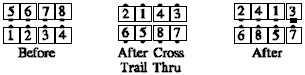

Do the (Anything) call, then centers Trade as ends U-Turn Back away from the center (as in Cross the K). If the (Anything) call ends in a tidal setup: The centers of each line Trade, and the ends of each line turn back away from the center of their side.
Cross Trail Thru the K:

© Copyright 1983, 1986-1988, 1995-2011 Bill Davis, John Sybalsky and CALLERLAB Inc., The International Association of Square Dance Callers. Permission to reprint, republish, and create derivative works without royalty is hereby granted, provided this notice appears. Publication on the Internet of derivative works without royalty is hereby granted provided this notice appears. Permission to quote parts or all of this document without royalty is hereby granted, provided this notice is included. Information contained herein shall not be changed nor revised in any derivation or publication.